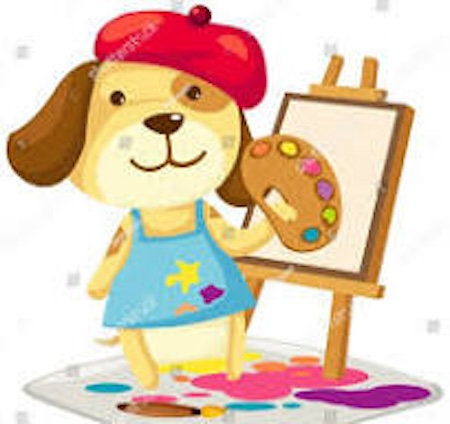

Doggy Art

Watercolor Artist Extraordinaire
Email: bark@whiskerswatercolors.com
Phone: (555) 123-PAWS
Website: www.whiskerswatercolors.com
Dog Park: Central Park, NY
Dog Park Office Hours: Mondays & Wednesdays, 3-5 PM at Central Park (Treats accepted as payment)
Skills
Paw-some Watercolor Techniques
Master of blending hues with a light touch of paws and tail swipes.
Fetching Color Theory
An eye for colors that make tails wag, from bold blues to serene greens.
Expressive Tail Flicks
Adds emotion and flair to every piece, ensuring each work is a true “tail” of art.
Portraits & Pet-ture Perfect Landscapes
Specializes in capturing the essence of every pet, from the fluffiest cats to the snooziest bunnies, and idyllic scenes like sun-soaked dog parks.
Education
Bachelor of Fine Paws
Barkwood University, NY
Graduated 2022,
Studied under renowned canine artists, with a focus on watercolor techniques and expressive barking.
Advanced Tail Techniques in Art
Paws School of Design
Online Course
Completed 2022,
Developed advanced tail-swish techniques for a unique watercolor finish.
Experience
Lead Artist
Woof & Whiskers Gallery
New York, NY
Jan 2023 – Present
Created over 50 paw-painted masterpieces, selling to art-loving pet owners and collectors.
Hosted interactive “Paint with Your Pooch” workshops, encouraging creativity in dogs of all breeds.
Freelance Paw-traits
Central Park, NY
May 2021 – Dec 2022
Commissioned by local dog lovers for personalized pet portraits, capturing the unique personality of each furry friend.
Exhibited at the annual “Barkfest” art show, winning the “Best in Show” award two years in a row.
Contact
Email: bark@whiskerswatercolors.com
Phone: (555) 123-PAWS